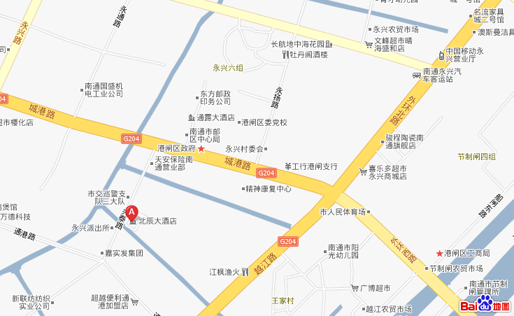

关于举办2010年全国少年儿童五子棋锦标赛暨全国青少年五子棋夏令营的通知
#1 关于举办2010年全国少年儿童五子棋锦标赛暨全国青少年五子棋夏令营的通知 作者：有志青年 发表时间：2010-7-1 12:17:51
原文地址：http://games.sports.cn/wuziqiorg/bulletin/2010-06-29/2039050.html
各省、自治区、直辖市、计划单列市棋牌运动管理中心、棋院、棋类协会及相关机构：
为了进一步提高我国少年儿童五子棋的技战术水平，满足广大少年儿童五子棋爱好者学习、交流的需求，同时掀起“全民健身日”群体活动的高潮，丰富青少年的暑期生活，国家体育总局棋牌运动管理中心定于2010年8月14日至17日在江苏省南通市举办“中国移动杯”2010年全国少年儿童五子棋锦标赛暨全国青少年五子棋夏令营。
请各有关单位高度重视，积极组织本地区的少年儿童五子棋爱好者报名参加。各参赛队和参赛棋手要严格遵守赛会和夏令营的各项规定，确保赛事活动安全、顺利进行。
2010年全国少年儿童五子棋锦标赛暨全国青少年五子棋夏令营竞赛规程
一、主办单位国家体育总局棋牌运动管理中心
二、承办单位
江苏省南通市体育局
江苏省南通市港闸区教育局
三、协办单位
中国移动通信集团江苏有限公司南通分公司
四、比赛时间和地点
2010年8月14日至17日 江苏省南通市
五、竞赛项目
个人赛和团体赛
六、参赛资格
（一）个人赛：全国18岁以下的少年儿童均可参赛。
（二）团体赛：参加团体赛的代表队必须由男女选手共同组成。
七、年龄分组
少年组：1992年1月1日至1997年12月31日出生。
儿童组：1998年1月1日（含）以后出生。
八、 竞赛办法
（一）采用国家体育总局棋牌运动管理中心最新审定的《中国五子棋竞赛规则》。
（二）个人赛分组进行，分为男子少年组、女子少年组、男子儿童组、女子儿童组。
（三）团体赛分为少年组团体赛和儿童组团体赛。
（四）竞赛制度：比赛赛制和轮次视最终报名情况确定。
（五）比赛时限：少年组采用每人60分钟包干制，超时判负；儿童组采用共用时60分钟，然后每方30分钟包干制，超时判负。
（六）名次计算
1．个人赛：
单循环赛制比较得分区分名次，得分高者名次列前；如得分相同则依次比较小分、胜局和直胜区分名次，均为高者列前；如再相同则不涉及录取名次的为并列名次，涉及录取名次的加赛快棋决定最终名次。
积分编排制比赛依次比较得分、对手分、中间对手分、胜局数区分名次，均为高者列前。如再相同，则涉及录取名次的加赛快棋决定最终名次，否则名次并列。
2．团体赛：以个人赛成绩计算团体赛成绩。计算方法为：各组别取每队成绩最好的1名男选手和1名女选手的名次相加即为该队该组别的名次分，名次分小者名次列前；如果名次分相同，则依次比较个人名次，个人名次高者成绩列前；如再相同则男子组个人名次高者所在单位名次列前。
九、 裁判和仲裁
（一）正、副裁判长由国家体育总局棋牌运动管理中心选派，承办单位根据需要和精干的原则，选派有执裁经验的裁判员担任大会工作。
（二）设立仲裁委员会，仲裁委员会主任由主办单位任命，仲裁委员从参赛各队领队、教练中产生。
（三）比赛中出现争议，可书面向仲裁委员会提请仲裁并交纳仲裁费200元，胜诉后退回。
十、 录取名次与奖励
（一）根据参赛总人数确定录取名次。个人赛各组参赛人数在50人以上（含50人）的录取前12名；参赛人数20-49人录取前8名；参赛人数10-19人录取前6名；参赛人数4-9人的录取前3名；3人以下录取第1名。团体赛各组参赛队数在20个队以上（含20个队）的录取前8名；参赛队数在10-19个队的录取前6名；参赛队数在4-9个队的录取前3名；参赛队数为3个时录取第1名。
（二）奖励
1．个人赛各组前3名发给获奖证书和奖牌；4-12名发给获奖证书。团体赛各组前3名发给获奖证书和奖杯；4-8名发给获奖证书。
2．大会将评选优秀组织奖（单位）、体育道德风尚奖（个人）等荣誉奖项，对获奖单位和个人颁发证书给予表彰。
（三）段、级位称号。在比赛中获得名次的棋手可按《中国五子棋段级位制》（试行）的规定获得相应的中国五子棋段、级位称号。请参赛棋手每人携带一寸免冠彩色照片1张，以备办理中国五子棋段、级位证书用。
十一、报名与报到
（一）凡爱好五子棋运动的少年儿童均可通过单位报名参赛。
（二）每单位可报领队1人，教练1人，棋手若干名。家长等其他陪同人员视为随队人员。组委会统一接待上述人员，发给相应的证件。
（三）各单位须认真填写报名表（见附件2）的各项内容并加盖单位公章。
1.参赛选手除填写报名表外，还须同时缴纳报名费100元，一寸正面免冠照片1张（制作参赛证用），报名表连同身份证复印件或户口复印件、照片、报名费等一并寄往承办地。拟参加各年龄组团体赛的单位每参加一个组别的比赛须交纳团体赛报名费100
#2 Re:关于举办2010年全国少年儿童五子棋锦标赛暨全国青少年五子棋夏令营的通知 作者：黄药师 发表时间：2010-7-1 17:39:01
好 期待各地孩子们聚集南通。
#3 Re:关于举办2010年全国少年儿童五子棋锦标赛暨全国青少年五子棋夏令营的通知 作者：汤姆逊 发表时间：2010-7-4 16:16:00
我就是一个参加比赛的#4 Re:关于举办2010年全国少年儿童五子棋锦标赛暨全国青少年五子棋夏令营的通知 作者：黄药师 发表时间：2010-7-4 20:02:56
楼上自曝家门撒！#5 Re:关于举办2010年全国少年儿童五子棋锦标赛暨全国青少年五子棋夏令营的通知 作者：飛龍在天 发表时间：2010-7-4 21:16:32
 怎么能少了我捏
怎么能少了我捏
#6 Re:关于举办2010年全国少年儿童五子棋锦标赛暨全国青少年五子棋夏令营的通知 作者：十五道圣 发表时间：2010-7-12 10:32:24
北辰大酒店的地址怎么没有的？
#7 Re:Re:关于举办2010年全国少年儿童五子棋锦标赛暨全国青少年五子棋夏令营的通知 作者：有志青年 发表时间：2010-7-12 11:31:04
#8 Re:关于举办2010年全国少年儿童五子棋锦标赛暨全国青少年五子棋夏令营的通知 作者：海湾浪琴 发表时间：2010-8-6 13:02:55
怎么还不公布具体比赛的时间安排呢？大家都在等着安排自己的旅程!!!!!!!!!!!!!!!!!!!!!!#9 Re:关于举办2010年全国少年儿童五子棋锦标赛暨全国青少年五子棋夏令营的通知 作者：有志青年 发表时间：2010-8-6 14:19:25
13日报到，14-17日比赛，17日中午结束呀，通知里都写了呀#10 Re:关于举办2010年全国少年儿童五子棋锦标赛暨全国青少年五子棋夏令营的通知 作者：霸王龙 发表时间：2010-8-11 10:04:49
我也是参家的［ 有志青年 于 2010-8-11 11:33:09 时奖励此帖[金币加 20 威望加1］